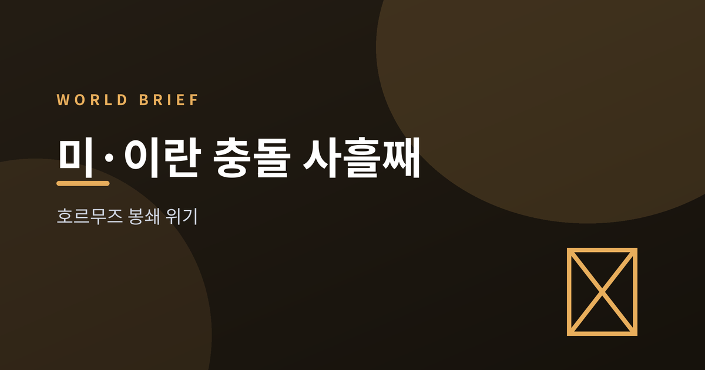
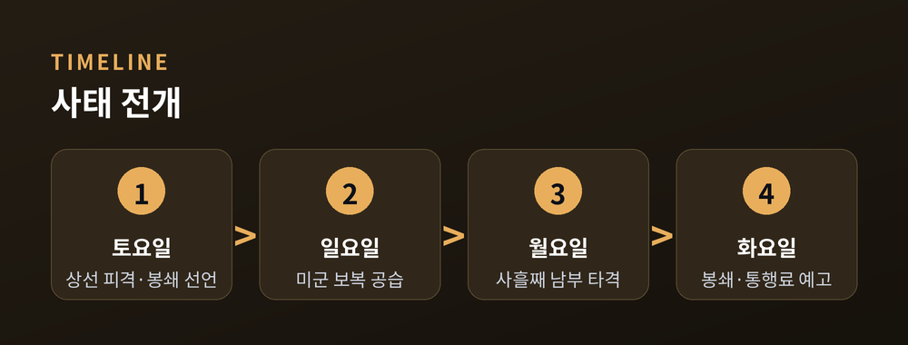
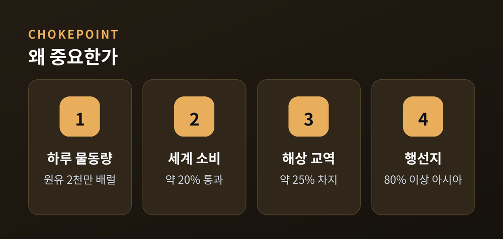
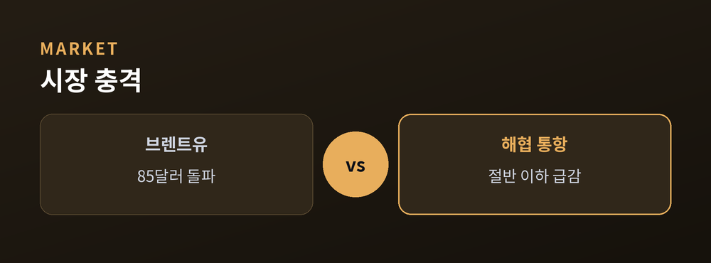
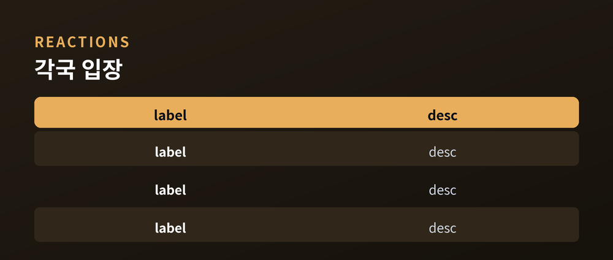

무슨 일이고 왜 중요한가
오늘은 미국과 이란의 무력 충돌, 그리고 호르무즈 해협을 둘러싼 긴장을 정리해 보겠습니다.
사흘째 이어진 공습과 '통행료 20%' 선언까지, 사실관계와 그 무게를 차분히 짚어봅니다.
민감한 사안인 만큼 어느 한쪽을 단죄하기보다 각국의 주장과 국제사회 반응을 함께 담았습니다.

7월 14일 현재, 미군의 이란 남부 타격이 사흘째 이어지고 있습니다.
미 중부사령부는 월요일 밤 약 5시간 작전에서 이란의 연안 방어체계와 미사일·드론 기지를 정밀 타격했다고 밝혔습니다.
반다르아바스 항과 키시·게슈름·아부무사 섬 등에서 폭발음이 보고됐습니다.
발단은 지난 토요일이었습니다.
이란이 호르무즈를 지나던 상선을 공격하고 해협 봉쇄를 선언했고, 오만 영해의 유조선 두 척이 피격돼 선원 한 명이 숨졌습니다.
이란은 인근 미군 시설을 겨냥해 반격했다고 주장했으나, 피해 규모는 아직 확인되지 않았습니다.
지난 6월 중순 양측이 맺었던 임시 휴전은 이미 흔들리던 참이었습니다.
트럼프 대통령은 반복된 공격을 이유로 그 휴전이 "끝났다"고 선언했습니다.
짧은 소강 뒤에 다시 포성이 돌아온 셈입니다.

이 좁은 바닷길이 세계 에너지의 대동맥이기 때문입니다.
호르무즈 해협은 하루 약 2,000만 배럴의 원유가 지나는 길목입니다.
세계 석유 소비의 약 20%, 해상 원유 교역의 약 25%에 해당하는 양입니다.
폭은 21해리에 불과하고, 사실상 우회로가 없습니다.
이곳을 지나는 원유와 LNG의 80% 이상이 아시아로 향합니다.
한 지점이 막히면 그 파장이 곧바로 세계로 번지는 구조인 셈입니다.
예전에도 이 해협은 여러 차례 긴장의 무대가 됐습니다.
다만 이번에는 공습과 통행료 부과가 겹치며 성격이 조금 다릅니다.
무력 충돌이 곧바로 물류 비용의 문제로 옮겨붙었기 때문입니다.

시장은 예민하게 반응했습니다.
브렌트유는 배럴당 85달러를 넘어 6월 중순 이후 최고 수준으로 올랐고, 한 주 상승폭은 10%를 넘었습니다.
선박 통항은 전주 대비 절반 이하로 급감했습니다.
여기에 트럼프 대통령은 미국을 "호르무즈의 수호자"로 규정하며 통과 화물에 20% 통행료를 매기겠다고 밝혔습니다.
이란 선박 봉쇄도 재개한다고 예고했습니다.
다만 분석가들은 8~9월 유가가 70달러 후반대에 머물 수 있다고 보아, 전망은 아직 엇갈립니다.

반응은 한쪽으로 모이지 않았습니다.
이란 아락치 외무장관은 "이란이 언제나 해협의 수호자였다"며 맞섰고, "20%는 과하다, 공정하게 하겠다"며 협상 여지도 내비쳤습니다.
UN 국제해사기구는 국제 항행로에 통행료를 매기는 데 반대한다고 밝혔고, 중국도 해협 군사화와 통행료 제도에 찬성하지 않는다는 입장을 전했습니다.
한국은 원유 수입의 3분의 2가량을 중동에 기대고 있어 촉각을 곤두세울 수밖에 없습니다.
정부는 7~8월 도입 물량을 이미 확보해 단기 영향은 제한적이라고 봅니다.
다만 업계는 추가 계약이 필요한 9월 이후를 진짜 고비로 꼽습니다.

정리하면 이렇습니다.
공습은 사흘째 이어지고, 통행료와 봉쇄를 둘러싼 힘겨루기는 아직 결말이 보이지 않습니다.
사실관계는 계속 바뀌고 있으니, 단정보다 다음 며칠의 흐름을 함께 지켜보는 편이 좋겠습니다.
— 좁은 바닷길 하나가 세계의 저녁 유가와 우리 삶의 물가를 어떻게 흔드는지, 이번 국면이 조용히 보여주고 있습니다.
참고 소스